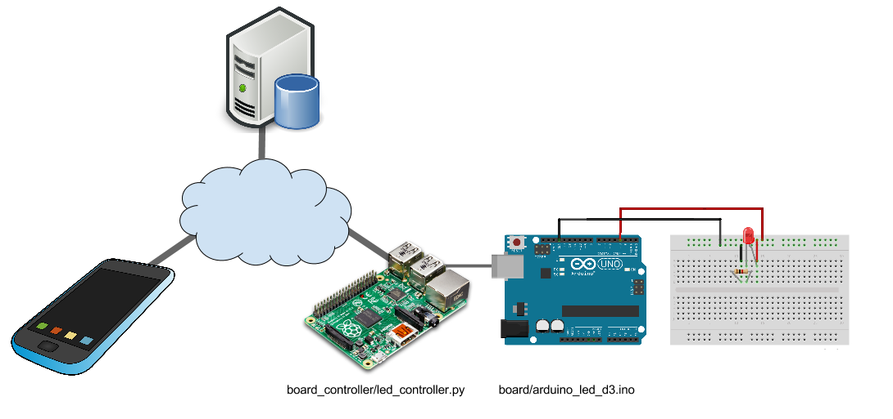

Arduino Remote
Monitor and control a sensor connected to Arduino using a REST client.

Arduino
The Arduino programs (sketch) are in folder board/arduino_led/. They should be uploaded to the Arduino board using the Arduino GUI.
The LED program responds to serial input of '1' and '0' by turning the LED on and off, respectively. Once the program is uploaded to the board, test it by connecting from the host computer.
- Open the terminal
- Type in
cat > /dev/[arduino-port]where the exact name of the arduino port might differ from system to system and also from session to session. This will connect the Standard Input of your computer (which is usually the keyboard) to the serial port of the Arduino. - On the prompt, type
1 (enter). This should turn the LED on the Arduino ON. - Next, type
0 (enter). This should turn the LED on the Arduino OFF.
Computer
This can be a Mac, PC, or a Raspberry Pi. The folder board_controller contains the python program that connects to the remote Rails server and sends control signal to the Arduino through serial interface.
To connect to the server using the REST API, we use requests library. It has a great tutorial to get you started in less than a minute!
To connect to the Arduino using the serial interface, we use pySerial library.
Setup
- Run the board program (in board/arduino_led/arduino_led_d3)
- Make sure the remote server is running
- Install packages 'pySerial', and 'requests' if necessary, using either pip or easy_install
Description
- Communicates with the rails server using REST API.
- Sends an http GET to the rest endpoint. Checks the json response.
- If is_active is True, sends '1' to the board. LED should be switched ON after blinking.
- If is_active is False, sends '0' to the board. LED should be switched OFF after blinking.
Server
The server is a Ruby on Rails server hosted on Cloud9. The source code of this project is here.
The server has two responsibilities:
- Host the sensor data and states
- Serve the sensor data through a REST API
An alternative is using Parse, which comes with the added benefit of push notifications.
App
This app is a GUI for the REST client to communicate with the Server. It can be implemented as an Android, an iOS or a web app.
The rails server provides a GUI to access the sensor data and manipulate them. For starter, we can use this as the App. The url for the LED sensor is here.